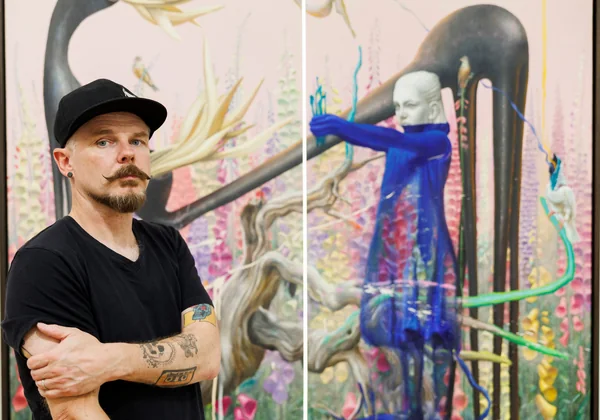

Rasher Mark Kavanagh

About Rasher
My Paintings are compositions of visualisations depicting and interrogating unanswered questions that have and continue to pester and agonise humanity.
By exploring our place within the context of our civilisation and probing our collective consciousness, my paintings urges viewers to form a critical and analytical opinion of humanity's place within the natural world, the universe, and the vast unknown.
Through an informed presentation of vices and virtues, depictions of greed, shame , and innocence, my work brings viewers on a journey moving through realism, abstraction until surreality frames our experience of the exploration of the existential absurdity of life, and interconnectedness the many facets of our being and the universe we inhabit. My work accuses humanity of being innately sinful and flawed, simultaneously, my work applauds and celebrates creative acts inspired by the natural world, unrestrained by our formal understanding of the universe.
My work is not expecting viewers to know the answers, but aims to provoke and awaken deep and shared yearning we have to understand the world we share.
Interested in Rasher Mark Kavanagh's work?
Send an enquiry through PlotArt and we'll put you in touch with the artist.
Enquire through PlotArt